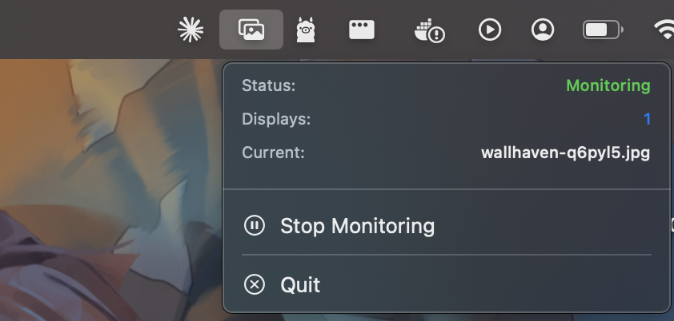

Features
Auto Sync
Detects wallpaper changes and syncs across all displays instantly.
Multi-Display
Works with any number of connected displays, including new ones.
Menu Bar
Lives in your menu bar. See status, current wallpaper, and last sync time.
Zero Config
No setup required. Launch the app and it handles the rest.
Installation
Download the latest release
Grab the DMG from the releases page.
Move to Applications
Drag WallSync.app into your Applications folder.
Remove quarantine attribute
Since the app isn't signed with an Apple Developer account, run this in Terminal:
Launch
Open the app. It starts monitoring automatically from the menu bar.